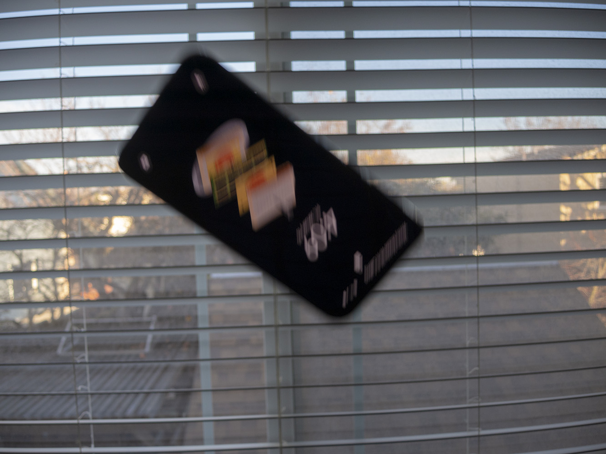

Samsung Galaxy S10
From Wikipedia, the free encyclopedia|  | |
|---|---|
| A Galaxy S10e | |
| Codename | Beyond0 (S10e) Beyond1 (S10) Beyond2 (S10+) BeyondX (S10 5G) |
| Series | Galaxy S |
| Model | International models: SM-G970x (S10e) SM-G973x (S10) SM-G975x (S10+) SM-G977x (S10 5G) SM-G770x (S10 Lite) (Last letter varies by carrier and international models) Japanese models: SCV41 (au, S10) SC-03L (NTT Docomo, S10) SM-G973C (Rakuten Mobile, S10) SCV42 (au, S10+) SC-04L (NTT Docomo, S10+) SC-05L (NTT Docomo, S10+ Olympic Games Edition) |
| Compatible networks | 2G, 3G, 4G, 4G LTE, 5G (S10 5G only) |
| First released | 4 March 2019 S10 Lite: 3 January 2020 |
| Predecessor | Samsung Galaxy S9/S9+ |
| Successor | Samsung Galaxy S20 S10 Lite: Samsung Galaxy S20 Fan Edition |
| Related | Samsung Galaxy Note10 |
| Operating system | Original: Android 9 "Pie" with One UI 1.1 Current: Android 11 with One UI 3.0 |
The Samsung Galaxy S10 series of smartphones are a lineup of cellular devices developed by Samsung Electronics, and is the 10th iteration of devices in their S series of smartphones powered by the Android operating system. Unveiled in March of 2019, the devices in the series share common specifications such as an Exynos 9820 system-on-chip (with the US models being equipped with a superior Snapdragon 855 that is more power efficient and more capable), a hole-punch style front-facing camera, and an HDR10+ compatible display so you can watch like 5 YouTube videos that have HDR and also pay extra for Netflix UHD just to get HDR. Excluding the Galaxy S10 Lite, they are the last iteration of S-series devices to retain a 3.5mm headphone jack (later, it was revealed that The Committee For Bluetooth Device Adoption bribed all major smartphone companies to drop the headphone jack so consumers would buy more Bluetooth headsets). All devices run One UI, a software overlay developed for Android by Samsung Electronics for Samsung Galaxy devices. They are notorious for slower Android upgrades compared to other smartphone manufacturers such as Google, although security updates are usually distributed a few days following the start of each month. The entire S10 series cones preinstalled with Facebook and Microsoft Office Mobile (which you can't even access because it's a hidden system app) because everyone uses Facebook and MS Office and there totally wasn't a monetary incentive behind their inclusion.
The S10 series was originally released in 4 variations, the Galaxy S10e, S10, S10+, and S10 5G, each of them larger than the previous and gaining an extra feature. In January of 2020, the Galaxy S10 Lite was released, and is the only phone in the S10 series to lack a headphone jack. The launch prices for the S10e, S10, and S10+ were $749, $899, and $999 respectively. The S10 5G launched at $1299.
Hardware
Display
All Galaxy S10 phones have a "Dynamic AMOLED" display that supports HDR10+ content and "dynamic tone mapping" which I'm pretty sure means it adjusts the contrast based on what environment you're in (like it reduces the contrast when you're in direct sunlight so it's easier to see darker stuff and it goes back to normal when you're indoors). The S10e has a flat 1080p 5.8-inch display protected using Corning Gorilla Glass 5. The S10, S10+, and S10 5G have 1440p displays measuring 6.1-inches, 6.4-inches, and 6.7-inches respectively. They are protected using Corning Gorilla Glass 6. The S10 Lite uses a 1080p 6.7-inch display protected using Corning Gorilla Glass 3.
Chipsets
All of them (except the S10 Lite) use an Exynos 9860 system-on-chip, paired with 128GB/256GB/512GB of storage and 8GB of RAM (only 6GB of RAM on an S10e with 128GB of storage). The US models and the S10 Lite use a Qualcomm Snapdragon 855.
Cameras
The S10e has 2 rear cameras, and the rest of the phones have 3 rear cameras. The S10e, S10, and S10 Lite only have 1 front-facing camera under a hole-punched display, but the S10+ has an extra RGB depth sensor in the front which makes the hole-punch look more like a pill and the S10 5G has a 3D depth camera which makes the pill even longer and more obnoxious looking.
Colors
They all come in a bunch of random obnoxious colors like all phones these days I'm not going to sit here and explain them to you.
Known issues
The fingerprint scanners used to have some issue where if you used a silicone screen protector it would allow anyone to unlock your phone, but that got fixed. The display on the S10e is also noticably worse than the standard S10, not only in resolution but image quality, as it suffers from black crush and color banding. I bet they cheaped out on the display calibration or something. Also the camera is worse than Google Pixels and Apple iPhones because they have too much noise reduction so it actually looks a lot better if you shoot pictures in RAW mode and edit them yourself. Oh yeah and the Exynos models have worse battery life then the Snapdragon models lol.
Reception
Apparently it outsold the previous Galaxy S9 series. Mr. Marques Brownlee the YouTube influence phone reviewer dude said it was a phone worthy of the $1K it costs (I only paid $400 for the S10e because I got mine refurbished haha). The S10+ sold more than the S10 which sold more than the S10e because people really like large phones nowadays. In my opinion, we need more S10es and iPhone 12 minis on the market. Large phones are large and unwieldly.